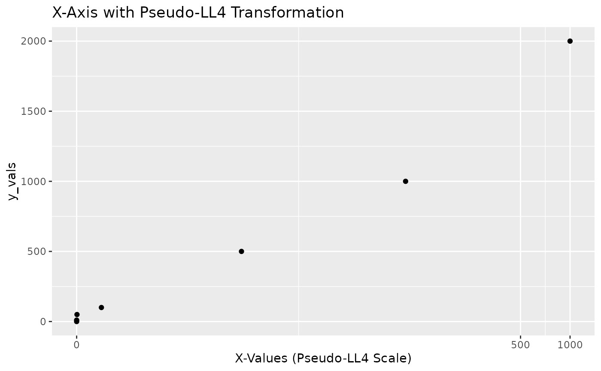

Generates a `scales::trans` object using the `ll4` transformation. This transformation object can be passed to the `trans` argument of `ggplot2::scale_x_continuous` or `ggplot2::scale_y_continuous`. It's designed for non-negative data and handles zero values gracefully. The "pseudo" aspect is conceptual, similar to `pseudo_log_trans` in that it handles a range including zero, but the transformation is `ll4`.
Examples
# \donttest{
if (require(ggplot2) && require(scales)) {
set.seed(123)
df <- data.frame(
x_vals = c(0, 0.01, 0.1, 1, 10, 100, 1000, NA), # Include 0 and NA
y_vals = c(0, 10, 50, 100, 500, 1000, 2000, 50)
)
# Using pseudo_ll4_trans for the y-axis
ggplot(df, aes(x = x_vals, y = y_vals)) +
geom_point() +
scale_y_continuous(trans = pseudo_ll4_trans(lambda = 4),
name = "Y-Values (Pseudo-LL4 Scale)") +
ggtitle("Y-Axis with Pseudo-LL4 Transformation")
# Using pseudo_ll4_trans for the x-axis
ggplot(df, aes(x = x_vals, y = y_vals)) +
geom_point() +
scale_x_continuous(trans = pseudo_ll4_trans(lambda = 2), # Different lambda
name = "X-Values (Pseudo-LL4 Scale)") +
ggtitle("X-Axis with Pseudo-LL4 Transformation")
}
#> Loading required package: scales
#> Warning: Removed 1 row containing missing values or values outside the scale range
#> (`geom_point()`).

# }